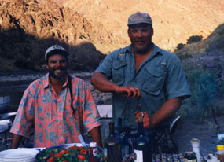

 Between rapids there is time to hike, fish, swim, survey scenery or drink a cold beverage. Expeditions from three to six days are unique because there is time during each day for a multitude of activities for everyone in your group to enjoy. Those ambitious sorts who can't seem to sit still can hike to gorgeous view points in the canyon. If you favor relaxation, you can sunbathe on the boat within reach of an icy drink, take a refreshing swim, or just retire to a comfortable chair in the shade with your favorite book.
You will be amazed as your guides evolve from master oarsmen to master chef, presenting you with an eight course meal prepared and cooked in the outdoors. Start the evening with hors d' oeuvres and glass of wine. Dinner is served around 7 or 8 o'clock p.m. One evening's dinner will feature deliciously marinated beef steaks grilled to your taste, served with sautéed shrimp, savory Down River Spuds, green salad, and fresh baked bread. Make sure to save room for homemade apple or sweet berry pie. Our gourmet Dutch oven recipes will leave your mouth watering in anticipation of the next meal.
Hot breakfast is served at about 8 a.m. Coffee and other hot drinks will be available earlier in the morning, as well fruit, yogurt, and juice in order to spell you until breakfast is served. At lunch time, we stop and prepare an impressive spread of food, including specialty salads and/or deli sandwiches. Snacks are available throughout the day in case you can't quite make it to the next meal!
We provide a limited amount of juice, soda, beer, mixers, and dinner wine. You are encouraged to bring additional beverages of your choice along on the trip. We will ice them for you and make them available when you need them. Please notify us of any dietary requirements, allergies, or medical conditions, we can do our best to make you comfortable on the trip.
|
Rates and Dates Book a trip Rivers: • Snake • Salmon Boats Equipment Food etc. |
or e-mail us